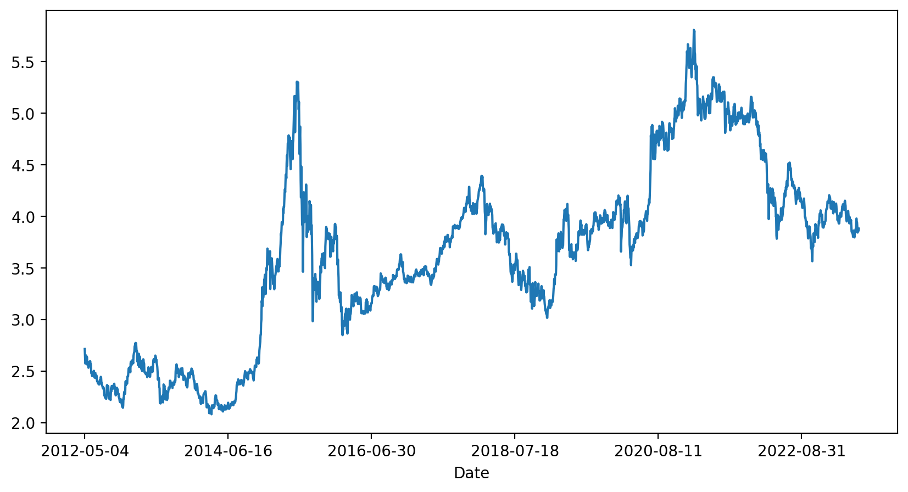
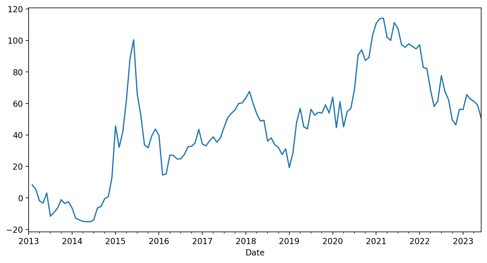
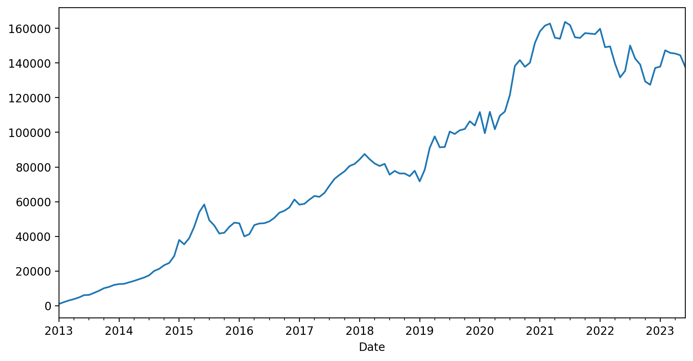
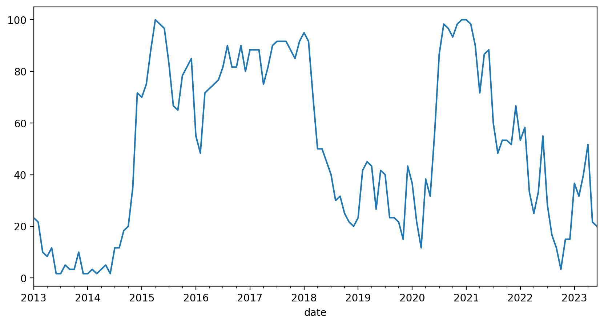

车票和上下车时机：宽基指数的投资方法
对股市投资有过认真研究的人，肯定接触过宽基策略。在我看来，是否能理解宽基投资的逻辑，甚至可以成为一个投资者是否入门的标准。不是因为宽基多么优秀，而是因为理解了宽基意味着理解了市场的周期性，知道敬畏市场，同时对自己有清醒的认识。
宽基有很多种分类，比如沪深 300 这种按照市值和流动性加权编制的指数，也有红利 ETF 这种策略类指数。作为我们股票入门投资的品种，沪深 300 ETF 是一个很好的选择。我们把它作为上车的车票。
投资沪深 300 的底层信仰
投资股市是为了在未来获取资本增值，那么就得搞清楚资本增值来自何处。沪深 300 代表了当下中国最重要的 300 家上市公司，它们市值最大，流动性最好。
投资沪深 300 就意味着投资了一篮子中国头部公司，这表示我们认为这些公司在未来会表现得很好。沪深 300 的表现事实上和中国经济高度相关，我们可以把投资沪深 300 当成投资中国。不过未来是很难预测的，所以，关于是否要投资沪深 300，需要一点信仰。回答自己一个问题，我到底是否看好中国经济的未来，如果答案是否定的，那么就应该远离中国股市，因为覆巢之下无完卵，在一个整体下行的市场中投资很难有好结果。
我的答案是坚定看好中国，这一方面是因为作为中国人的立场，另一方面是对中国充满信心。巴菲特说他的成功是开始于一颗幸运的精子，这种幸运换句话说就是因为他是美国人，在恰当的时间出生在一个上升趋势中的国家。他的幸运是以别人的不幸为代价的，这并不公平，我们这代人就是要为子孙后代赢得类似的幸运。
沪深 300 也是有缺点的，这和它的编制方式有关，沪深 300 以市值作为权重，每半年调整一次，这也就意味着进入沪深 300 有一个市值门槛，但是很多门槛之下的黑马反而是增长最好的股票，等它们能够进入沪深 300 的时候可能已经进入成熟期，增长放缓了。所以不能要求沪深 300 像市场炒作的热门股票那样高速增长，我们对沪深 300 的要求就是稳定跟上中国经济，并略有超出。
预期收益率和无风险收益率
我们要在这里引入一个预期收益率的概念。顾名思义，预期收益率就是对于一个投资标的，预期它带来的年华收益率。
这个收益率多少合适呢？需要一个比较基准。通常使用十年期国债收益率作为无风险收益率，因为国债是用政府信用做背书的，我们认为政府信用无风险。我们使用这个无风险收益率作为比较基准。
沪深 300 是股票，是有风险的，我们需要一定的风险溢价，根据经验，选择三倍无风险收益率作为沪深 300 的预期收益率。也就是说，如果十年期国债的收益率是 3%，我们要求沪深 300 的预期回报要达到 9% 才可以。当然，你也可以根据自己的情况调整这个风险溢价的倍数，后面我们也会解释这个溢价倍数的选择标准。
沪深300可以无脑买入吗？
我们已经选择了沪深 300 作为车票，可能也听过很多人推崇买沪深300 ETF，但是真的可以在任何时间无脑买入吗？
先来看一下沪深 300 的走势（凡涉及沪深 300 的价格数据都以 510300 ETF为准，它包含了打新和分红）：

假设我们听信了某个自媒体的鼓吹，无脑买入沪深 300 ETF，会发生什么呢？
| 年份 | 净值 | 持有年限 | 最高点 | 最低点 | 总回报 | 最大回撤 | 年化收益率 |
|---|---|---|---|---|---|---|---|
| 2012 | 2.71 | 11.16 | 5.81 | 2.08 | 43 | -64.15 | 3.26 |
| 2013 | 2.53 | 10.49 | 5.81 | 2.08 | 53.44 | -64.15 | 4.17 |
| 2014 | 2.37 | 9.5 | 5.81 | 2.08 | 63.94 | -64.15 | 5.34 |
| 2015 | 3.69 | 8.49 | 5.81 | 2.85 | 5.26 | -50.94 | 0.61 |
| 2016 | 3.54 | 7.49 | 5.81 | 2.85 | 9.82 | -50.94 | 1.26 |
| 2017 | 3.4 | 6.49 | 5.81 | 3.02 | 14.31 | -48.05 | 2.08 |
| 2018 | 4.14 | 5.49 | 5.81 | 3.02 | -6.14 | -48.05 | -1.15 |
| 2019 | 3.02 | 4.49 | 5.81 | 3.02 | 28.67 | -48.05 | 5.77 |
| 2020 | 4.15 | 3.49 | 5.81 | 3.53 | -6.44 | -39.28 | -1.89 |
| 2021 | 5.33 | 2.48 | 5.81 | 3.57 | -27.22 | -38.61 | -12 |
| 2022 | 4.99 | 1.48 | 4.99 | 3.57 | -22.2 | -28.56 | -15.56 |
| 2023 | 3.95 | 0.49 | 4.2 | 3.8 | -1.7 | -9.73 | -3.45 |
假设在一年的第一个交易日买入，截止目前（2023年6月30日）最后一个交易日。
如果我们是2012年买入的，经过11年的时间，你会获得 43% 的回报，年化回报率只有 3.26% ，持有过程中，你还要经历最大 64.15% 的回撤。
如果运气好一点，我们在 2014 年买入，截至目前总回报 63.94%，年化回报 5.34%，最大回撤 64.15%。
从统计来看，无论哪个年份买入，到目前为止，都算不上成功的投资，甚至可以说惨淡。
所以，沪深 300 不能无脑买入。我们需要更有效的策略。
定投是个好策略吗？
指数基金定投是一个非常流行的话题，被很多人描绘成普通人的投资银弹。但是，很少有人认真去计算一下定投的实际效果，我们以沪深 300 最近 10 年的数据来做一个测试，看看定投到底是不是好的投资策略。
如果我们从2013年开始定投沪深 300 ETF，每个月第一个交易日买入 1000 元，到目前一共投入 126期，总收益率只有 9.4%。即使按照2021年初的最高点计算，也只有 58% 的收益。如果从2021年开始定投，就更惨了，两年半的时间，总收益率是 -15.74% 。

从结果来看，定投沪深 300 的表现其实和沪深 300 本身的走势是一致的，并不会比一次性买入持有带来太多的优化，甚至不如买在幸运位置的表现。定投的实际意义有两个，一个是强制储蓄，从定投的总资产增长曲线也可以看出，我们的资产基本是在稳定增长的。

第二个意义是避免了择时，我们不需要关心什么时候买，也能获得与沪深 300 表现一致的投资组合。但是如果你真的手里有一大笔钱要投资，是不能把时间拉长到10年这样的维度去定投的，因为闲置的资金也有机会成本。
所以定投并不是银弹，但是作为一种强制储蓄手段是可以的。定投不能优化持股体验，这和中国股市牛短熊长的特点有关，上涨的时间往往是短暂了，而大部分时间是在下跌。虽然看上去定投摊薄了成本，但持股过程的体验并不友好，我们能直观感受到的依然是跌跌不休。定投也没有平滑掉波动，长期来看，我们的投资组合依然是长窜下跳的。特别是随着定投时间越来越长，每一期投入的资金占总资金的比例会越来越低，我们实际上是在持有一个没有操作的长期仓位。
推荐普通人定投宽基的观点大多来自美国市场，美国的标普 500 指数确实有很好的定投体验，这是因为美国股市是一个牛长熊短的市场。而中国股市正好相反，所以不要期待通过定投获得超额收益和更好的持股体验。定投只是一种强制储蓄手段，而且由于股市的波动性，为了避免浮亏变实亏，不能随时取出，事实上导致流动性变差了。
两个指标选择上下车时机
股市投资其实就是在正确的价格买入正确的标的。投资沪深 300 这种宽基指数可以让我们不需要去研究公司，所以不存在选择标的的问题。唯一的问题就是什么是正确的价格，因为价格是一个时间序列，也可以换一个说法，什么时候买入什么时候卖出，也就是上下车时机问题。
市场温度计
有一些媒体设计了一种叫做市场温度的指标，让投资者根据市场温度来选择上下车时机，比如市场温度低于 25 度买进，高于 80 度卖出。这种指标既简单又有效。它背后的原始数据就是市盈率分位数。
不过，直接使用市场温度指标还是有很大风险的，因为我们很难从历史趋势中看到极端值的分布。如果我们可以自己计算这个指标，就可以更准确地理解背后的原理，也可以根据市场情况去调整对这个指标的使用。我们接下来就设计一个自己的市场温度指标。
首先，需要搞清楚市盈率这个概念。股票的市盈率（PE）是一个评估股票价格和公司盈利倍数的指标，计算方法是用当前股票价格除以每股盈利。一般来说，PE 越低意味着股票越便宜。指数也有 PE，指数的 PE 是通过指数成分股加权计算得到的，可以理解成这一篮子股票的价格和盈利倍数。所以，指数也是 PE 越低越便宜。
为什么 PE 是变化的？这是股票投资的一个核心问题。股票的价格不是由某个人决定的，而是由市场全体决定的，也就是由所有参与买卖的人决定。价格是交易的结果，因为不同的人对价值的理解不同，同一个人在不同的时间对价值的预期也不同，所以股票的价格是随着交易者预期的变化而变化。这种预期可能受新闻舆论、重大事件、个股盈利等各种因素影响。
股票市场的一个特点就是周期性地错误定价，这种错误一方面是表现在时间维度上的。比如当下宏观经济很差，市场就会比较悲观的预期未来一两年的企业盈利可能会很糟糕，所以就会给股票定价很低以反映当下的情况。但是从更长时间维度来看，宏观经济总是会走出低谷，所以定价是既正确又错误的。这种在时间维度上的定价错误，就是一种套利的机会，只是我们需要付出时间成本和未来不确定的风险。另一个方面，人们对未来的短期预期总是过激的，要么过度悲观要么过度乐观。这也给了我们一种估值在空间维度的一个套利机会，同样地，这种套利也需要承受估值回归的时间成本和不确定性风险。
那是不是找到两个 PE 数值就可以了，在低 PE 的位置买进，在高 PE 的位置卖出？理想模型是这样的，但实际情况会更复杂一些，首先，从时间维度上看，2023年和20年前的中国从经济在结构上差异非常大，所以20年前的 PE 数值和今天的 PE 数值是不能比较的。这是市面上那些股票温度计的最大问题，我们通过滚动计算的方法来优化一下，就是使用过去五年的 PE 数据滚动计算分位数。五年基本覆盖了一个小的经济周期，既能反映估值的变化，又不会因为经济差异太大导致不可比。下面是计算后得到的最近十年的沪深 300 PE 滚动分位数：

纵坐标的数值是从0~100的，数值越低意味着估值越低，越应该买入，数值越大估值越高，意味着越应该卖出，与目前流行的市场温度的理念一致。
与沪深 300 的价格走势做比较，可以非常直观地发现几个买卖点位，比如 2013年到2014年中，2020年上半年，2022年10月份的买入位置，2015年初、2018年初和2021年初的几个大顶部的卖出为位置。
格雷厄姆指数
估值分位数可以很好的捕获上下车时机。但是也有个问题，这些买卖点位出现的间隔都是以年计的。在这种时间尺度上操作，非常考验人的耐心。又因为，我们的经验都是靠与现实世界的反馈获得的，这种频率的操作，很难让我们在短期内产生可靠的经验，没有可靠的经验，就只能靠理性思考带来的信仰。这对于大部分人是很难做到的。
除非你的性格天生坚毅，对于新手，我们需要舍弃对于精准抄底和逃顶的执着。我们需要更频繁的操作，来积累对市场的感知和经验，虽然这会降低收益率提高成本。从积累经验的角度，这是值得的。
我们构建一个股票和债券的持仓来达到这个目标。我们可以根据自己的情况，以月或季度为频率来调整我们的仓位。调整的逻辑就是股票和债券的收益率平衡，我们引入一个叫股债收益比的指标，这个指标也叫格雷厄姆指数。
格雷厄姆指数是股票收益率和无风险收益率的比值。我们的仓位可以分为两个部分，一个部分是股票，另一个部分是国债。仓位随着格雷厄姆指数而调整，以适应市场估值的变化，来捕获市场由于错误定价产生的套利机会。
未完待续。。。